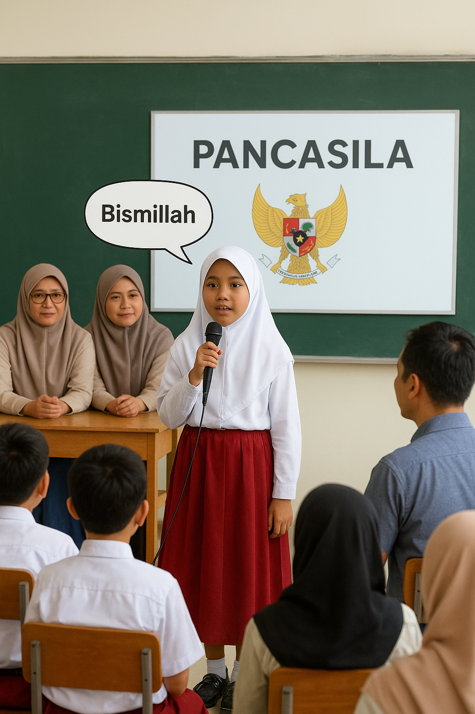
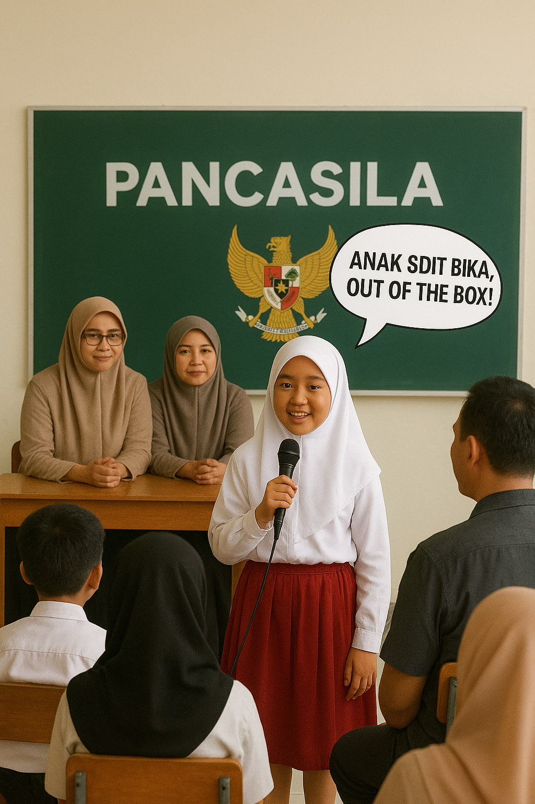

Slide 1 · Pembukaan
Pengamalan Butir Pancasila pada
Kegiatan Presentasi Ini!
- Bismillāhir-raḥmānir-raḥīm · السلام عليكم ورحمة الله وبركاته
- Bukan anak SD IT Bina Insan Kamil kalau tidak berpikir out of the box
- Hari ini kita membedah Pancasila di momen presentasi ini, sekarang juga

Slide 2 · Hook
Out of the Box
- Teman-teman biasanya ingat lomba 17-an, upacara, atau pramuka
- Saya berbeda: kita bedah Pancasila di aktivitas presentasi
- 那我们开始吧 · Nà wǒmen kāishǐ ba · Mari kita mulai
